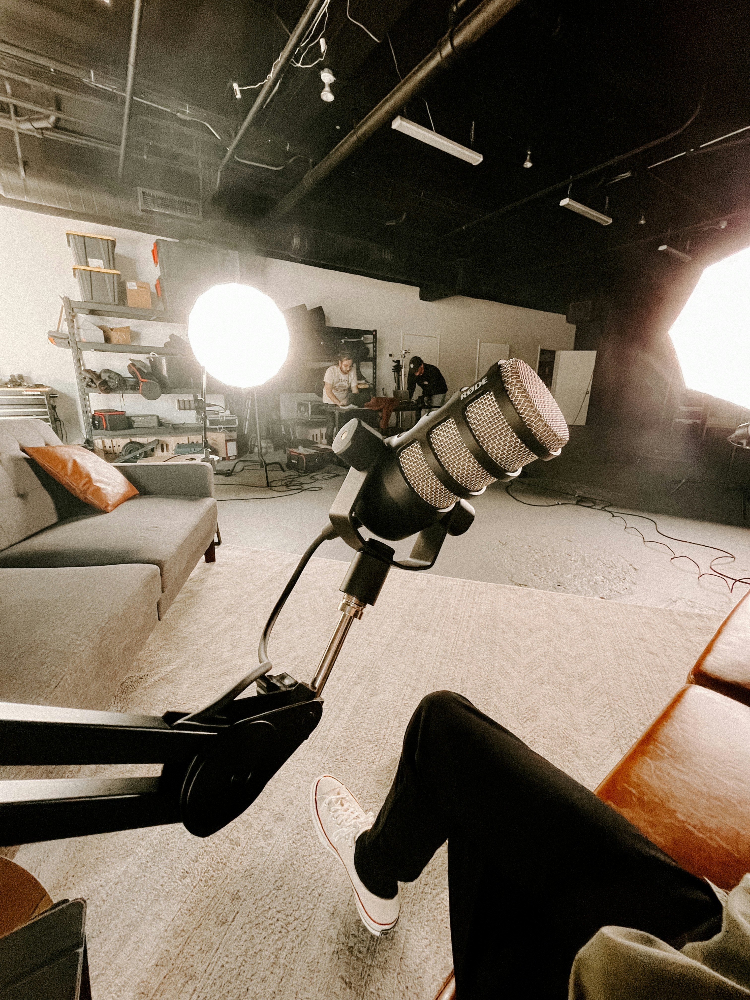
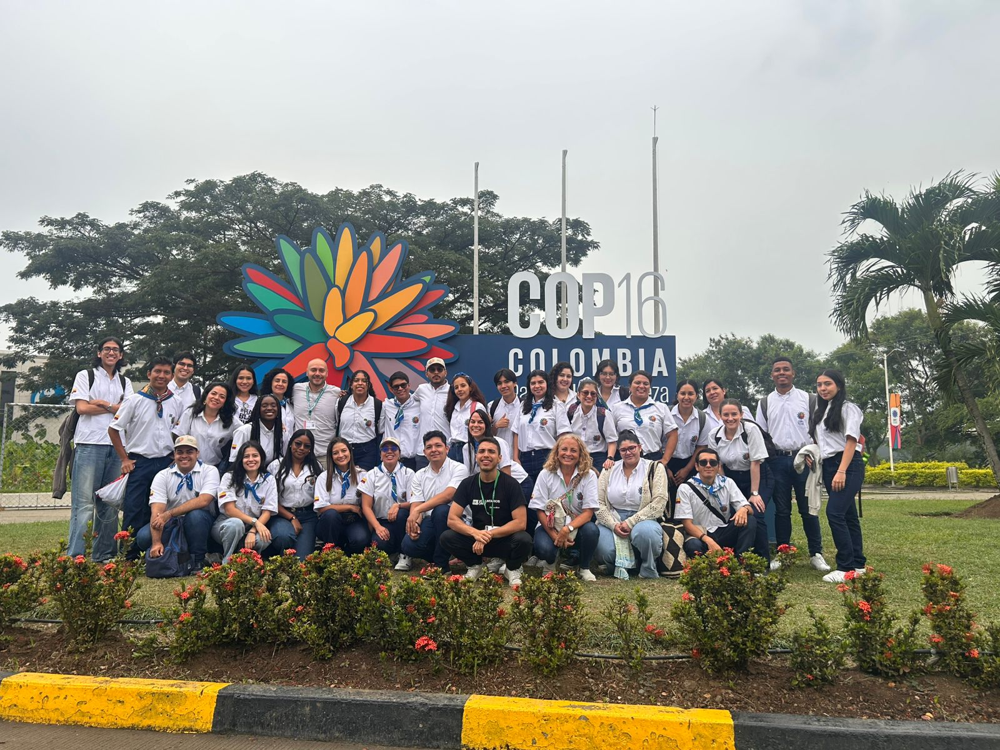
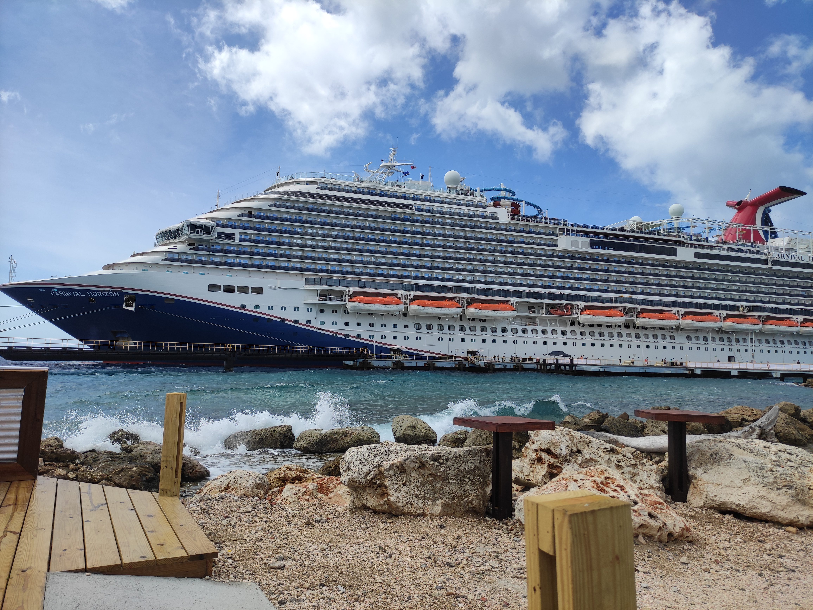
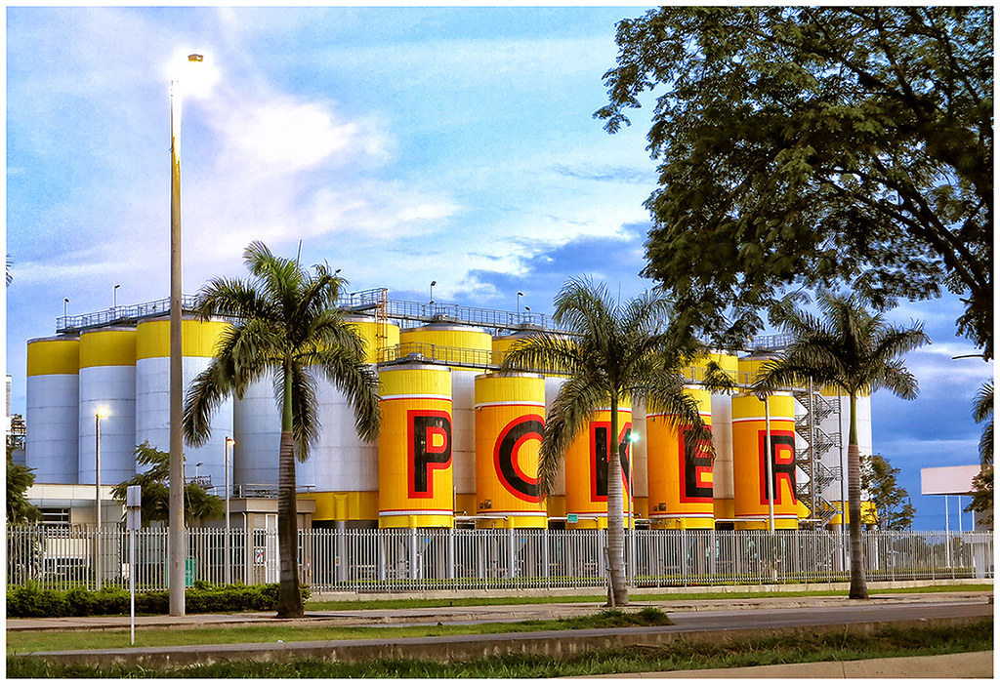
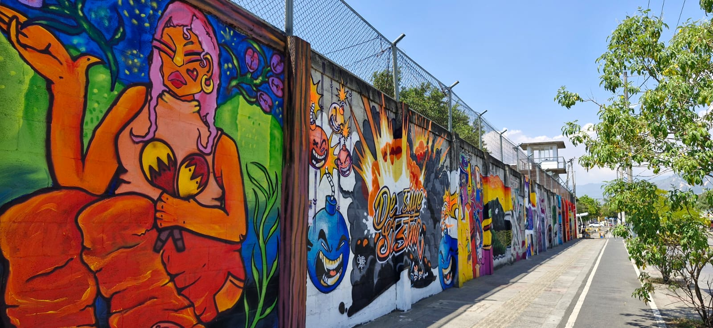
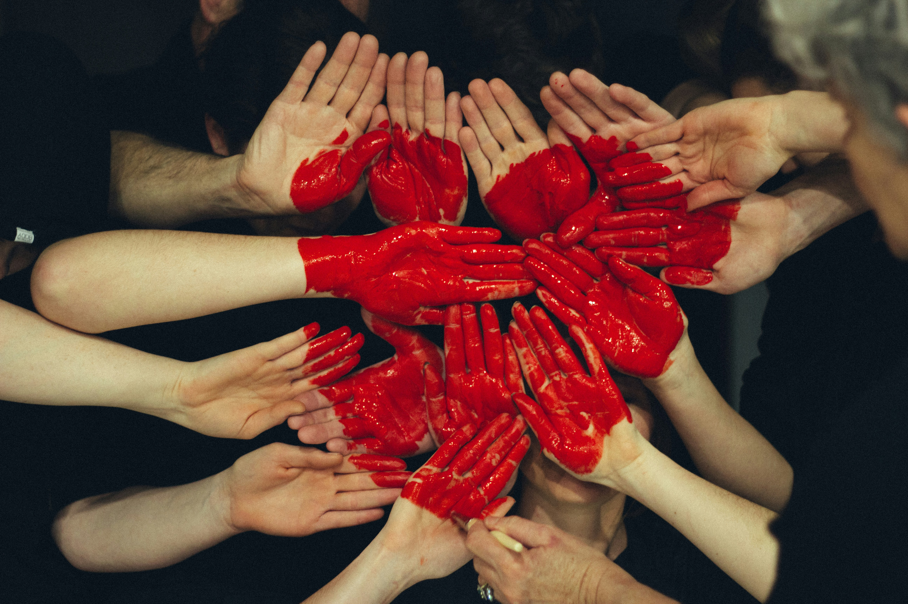

Experiencia profesional
8 proyectos · pasa el cursor para ver más
🎙
2024 – actualidad
Hack Tu Startup
Estrategia Digital
🌿
2024
COP16 Colombia
Relaciones Internacionales
🚢
2019 – 2023
Carnival Cruise Line
Gestión de Experiencia
🛍
2017 – 2019
Falabella Colombia
Gestión de Reputación
🏭
2016
Bavaria (SABMiller)
Cultura Organizacional
📻
2015
Cárcel de Villanueva
Comunicación C4D
🩸
2014
Fundación Valle del Lili
Marketing Social
🧶
2014
Alcaldía de Cali
Género y Comunicación